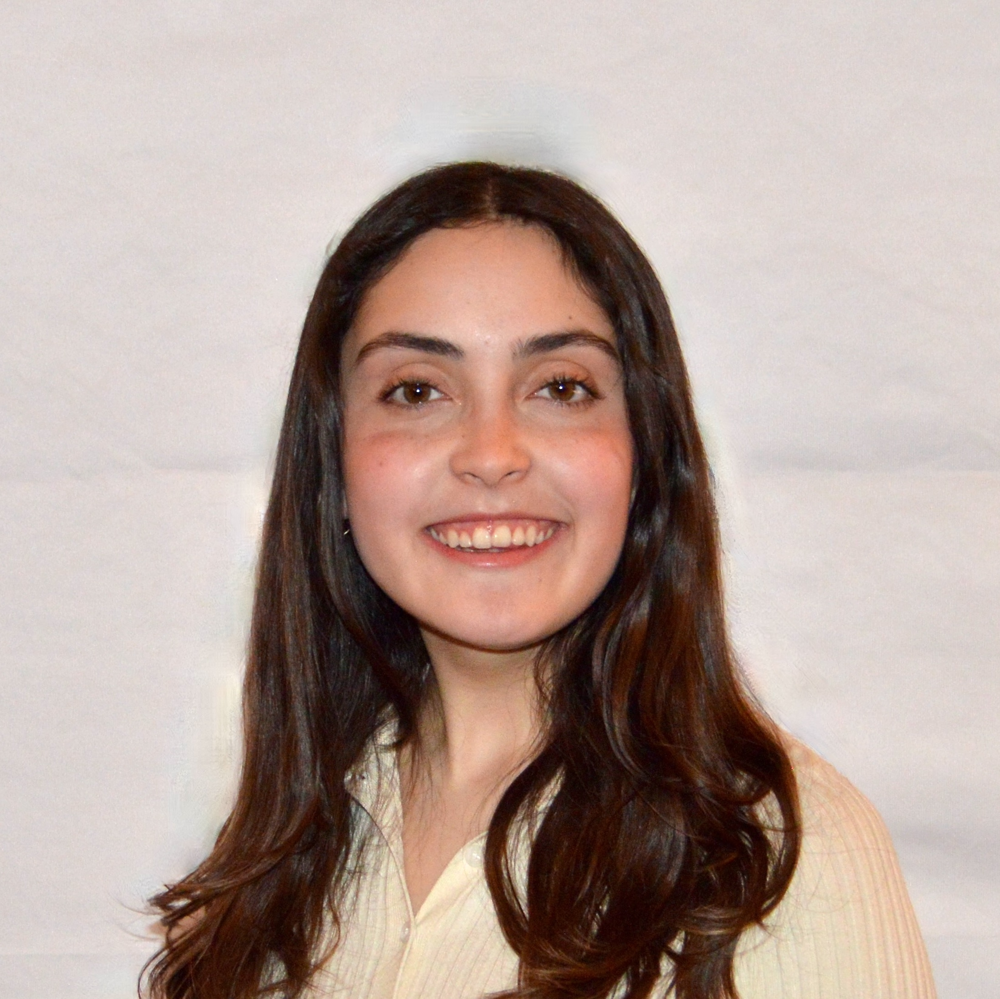

I design with empathy and build with logic. By combining Computer Science and Cognitive Science at UChicago, I create front-end experiences that prioritize human behavior, accessibility, and visual hierarchy over simply making things function.

Featured Work
HRI Lab Interface Redesign
A deep-dive into how I synthesized psychology research to redesign HTML face animations, improving participant comfort during human-robot dialogue experiments.
Read Case Study

Building This Portfolio
An information architecture and responsive design case study documenting how I built this site from scratch using Figma, HTML, CSS, and cognitive load principles.
Read Case Study